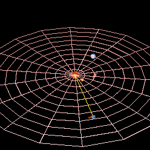

Neptune is the fourth largest and the farthest planet of the Solar System with the most powerful wind speeds out of all the planets. It is the smallest of the gas giants and is the first planet to be discovered by mathematical predictions in 1846.
Through simulations after the Nice model, it has been suggested that both Neptune and Uranus formed closer to the sun and later drifted away. It is hypothesized that the Solar System formed from a giant rotating ball of gas and dust known as the pre-solar nebula. Much of it formed the Sun while more of its dust went on and merged to create the first proto-planets. As they grew, some accreted enough matter for their gravity to hold unto the nebula’s leftover gas. Estimates suggest the creation to have taken place about 4.5 billion years ago, and the drifting about 4 billion.
From its discovery until 1930 when Pluto was discovered, Neptune was considered the farthest planet. After the discovery of Pluto, Neptune was thought to be the second furthest planet. When Pluto’s eccentric orbit was understood and its status dropped from that of a planet to a dwarf planet in 2006, Neptune regained the title of the farthest planet in Solar System. Neptune has an average distance of 2.8 billion miles/4.5 billion kilometers or 30.1 AU away from the Sun, and its currently 29.4 AU away from Earth with its light taking up to 4 hours to arrive to us.
The internal structure is very similar to that of the planet Uranus. Its atmospheres forms about 5% to 10% of its mass and extends about 10% to 20% of the way towards the core reaching pressures of about 10 GPa or 100.000 times that of Earth’s atmosphere. Concentrations of methane, ammonia and water are found in the lower regions of the atmosphere with the mantle equivalent to 10-15 Earth masses.
This mixture is referred to as “icy” even though it is a hot, dense fluid sometimes called a water-ammonia ocean. Going even deeper the conditions may be such that even methane decomposes into diamond crystals that rain downwards like hailstones. It is thought that this kind of diamond rain occurs also on Jupiter, Saturn and Uranus. The core is likely composed of iron, nickel and silicates. The core is estimated to be about 1.5 times the mass of Earth. The pressure at the center is 7 Mbar or 700 Gpa, twice as high as that at the center of Earth with temperatures of around 5.400 K.
Since it is the farthest planet from the Sun it has the longest orbital duration, completing a trip around the Sun in about 165 years. However, one sidereal rotation or day on Neptune is completed in 16.11 hours. The average distance from the Sun is about 30.1 AU, while at its perihelion 29.81 AU, and its aphelion 30.33 AU. The elliptical orbit of Neptune is inclined 1.77° compared to that of Earth.
